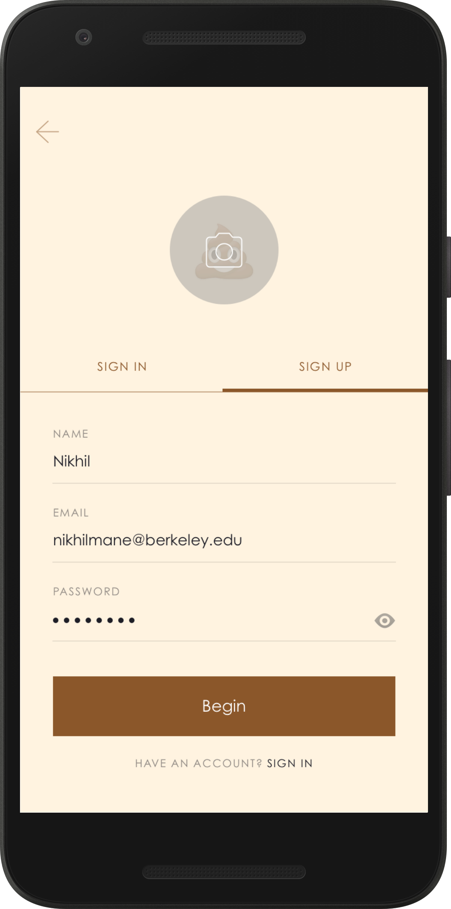
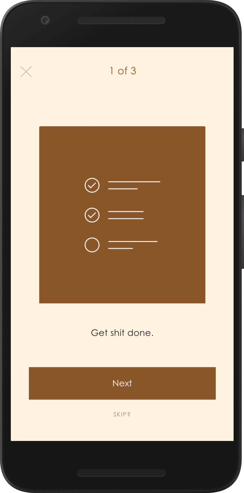
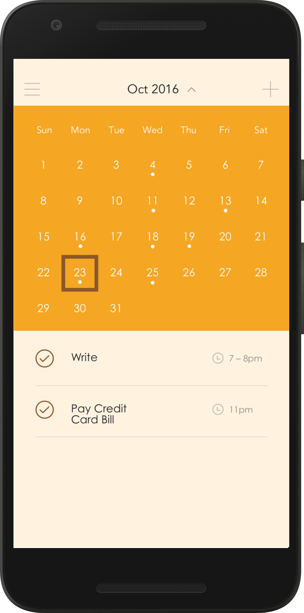

Experiments
Side projects.
- Tinkering
For a designathon (a design hackathon?) I wanted to make something that would be very different from most of the to-do apps that are seen out there. I was inspired to make this due to a quote by Chief Box man, Aaron Levie.
The idea is simple. You can only add single tasks (no multitasking) at a given time. The app provides some (questionable but funny) motivation. This can be extended through notifications (if you want it to). It also should give you the ability to repeat specific tasks so that you can potentially form habits (Eg. I am trying to read 1 article that I have saved to Pocket every day).
Here are the designs:
Log In
 Sign Up
Sign Up

Walkthrough

Home
 Calendar
Calendar

Prev Close